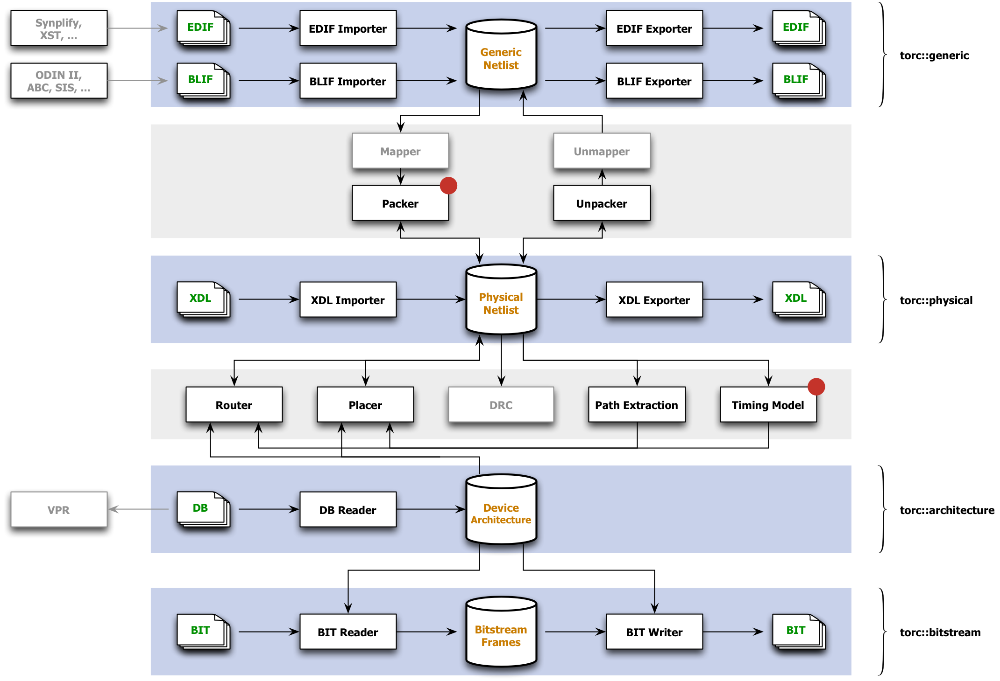

| |
| Documentation |
| |
|
Most of the documentation currently available for
Torc comes from Doxygen.
Example
code and unit tests are
also sources of information about Torc and its use.
|
| |
Structure
|
| |
|
Torc consists of four main APIs, shown against blue
backgrounds, and
associated CAD tools dependent on those APIs, shown
against gray
backgrounds. Blocks with a red dot in the
upper right corner are
not yet complete. Blocks that are grayed-out
are either
unscheduled at present, or are external tools that
Torc would like to
interface with.

The Generic Netlist API works with design netlists
that are not yet
mapped to a physical device. This most
commonly consists of EDIF
netlists in the commercial world, and BLIF netlists
in the academic
world.
The Physical Netlist API works with designs that
have been mapped to a
physical device, and which may or may not include
placement and routing
information. The supported XDL format is
nominally specific to
Xilinx devices, but should be flexible enough to
support a broad range
of other FPGA architectures.
The Device Architecture API provides logic and
wiring information for
underlying commercial devices, or for custom
architecture
devices. The API provides a standard interface
that can be used
by routers, placers, or other tools, regardless of
the underlying
device.
The Bitstream Frames API works with configuration
bitstreams for Xilinx
FPGAs, and can be used to inspect, modify, merge, or
split
bitstreams. Note that Torc understands
bitstream headers,
packets, and frame addressing, but has no knowledge
of configuration
frame internals.
|
| |
| Publications |
| |
|
Neil Steiner, Aaron Wood, Hamid Shojaei, Jacob
Couch, Peter Athanas,
and Matthew French, "Torc: Towards an
Open-Source Tool Flow," in Proceedings
of
the 19th ACM/SIGDA International Symposium on
Field-Programmable
Gate Arrays, FPGA 2011 (Monterey, California),
February 27–March 1,
pages
41–44, 2011. (PDF, Poster)
|
|
|
{kind=link}